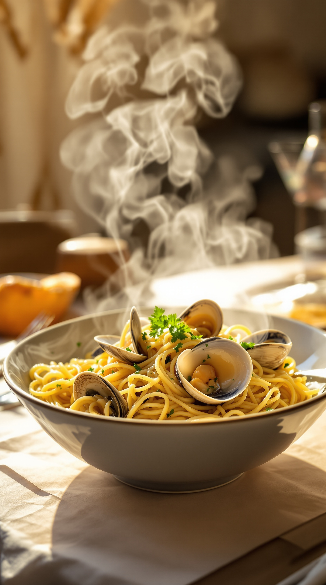
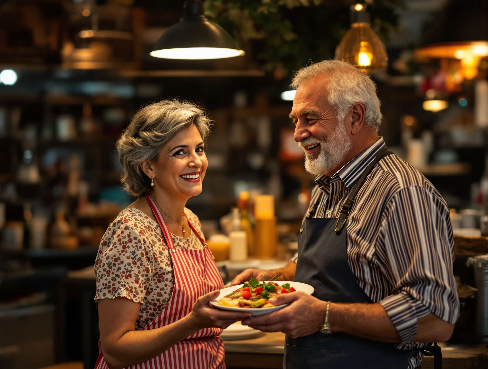
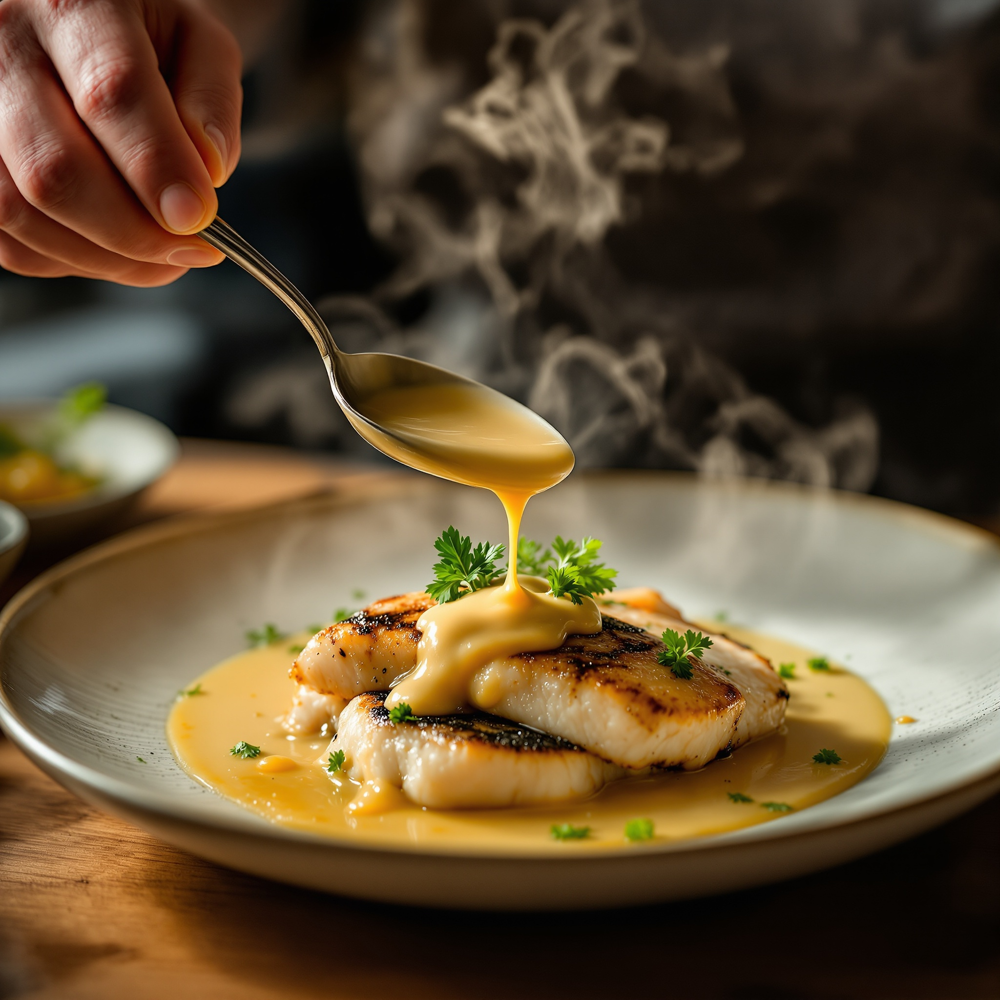
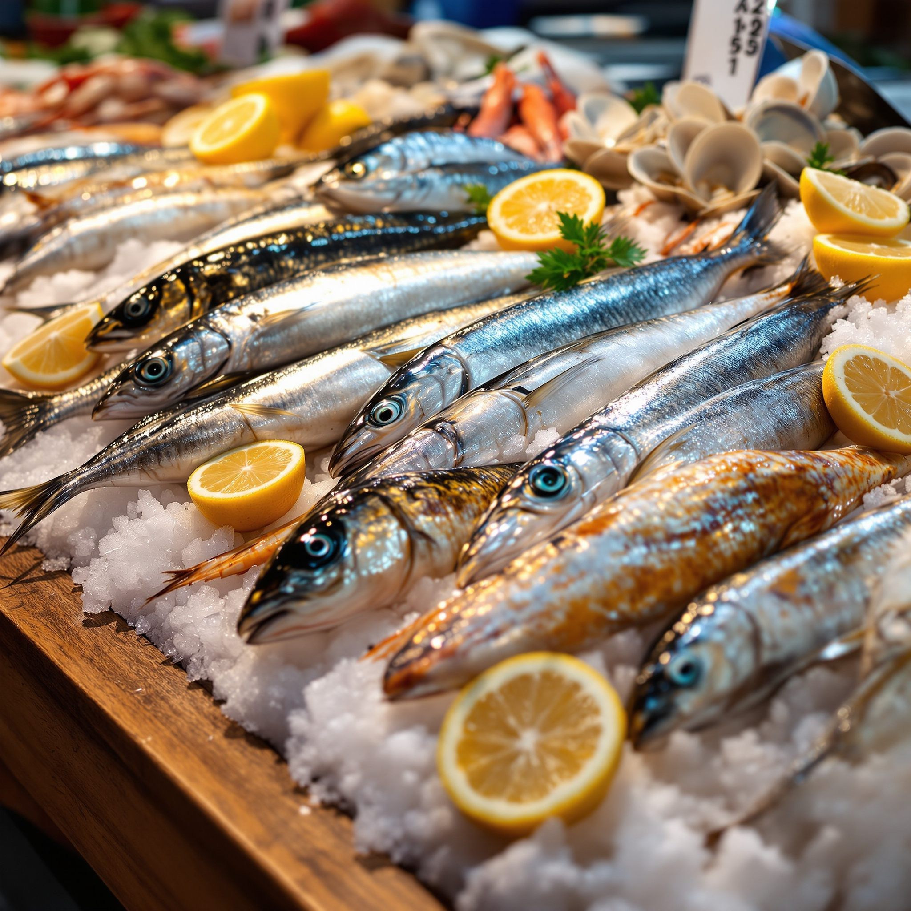
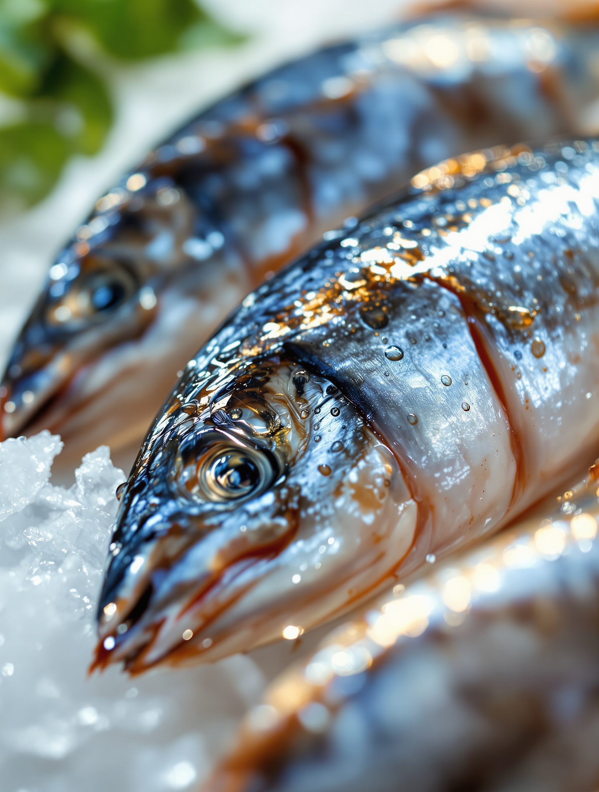
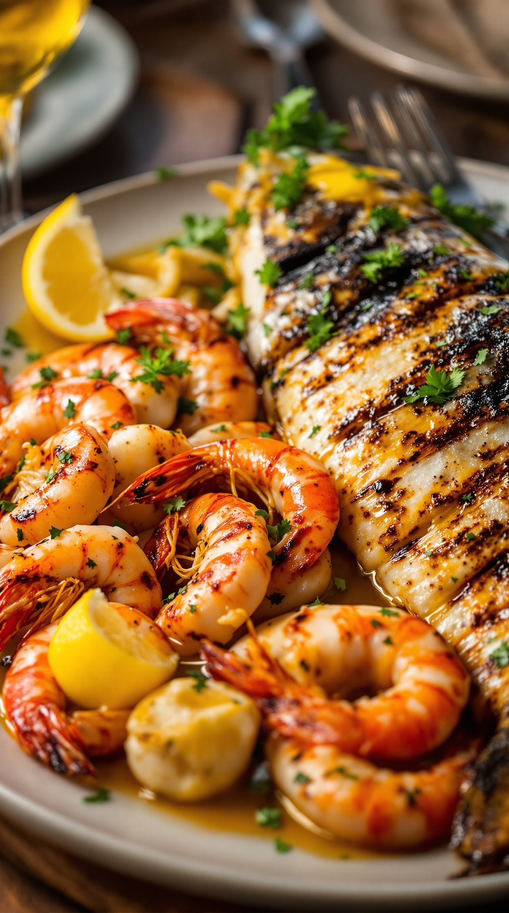
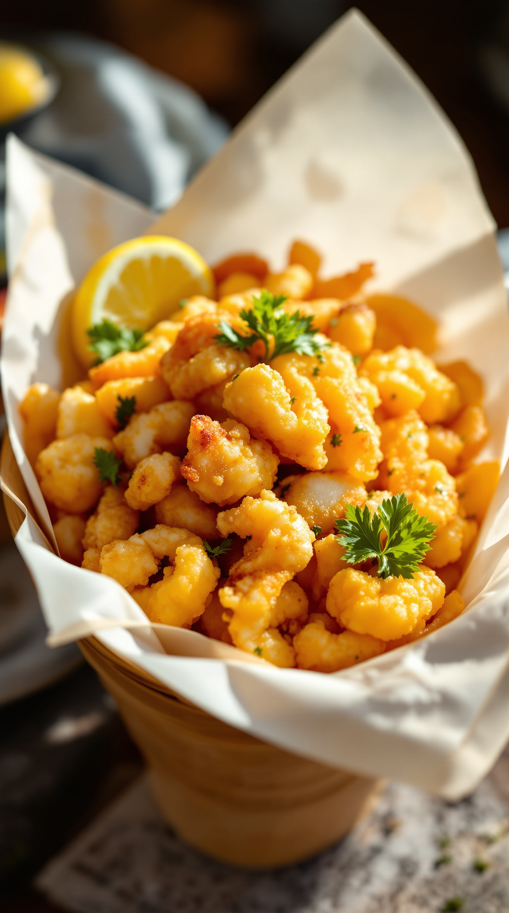
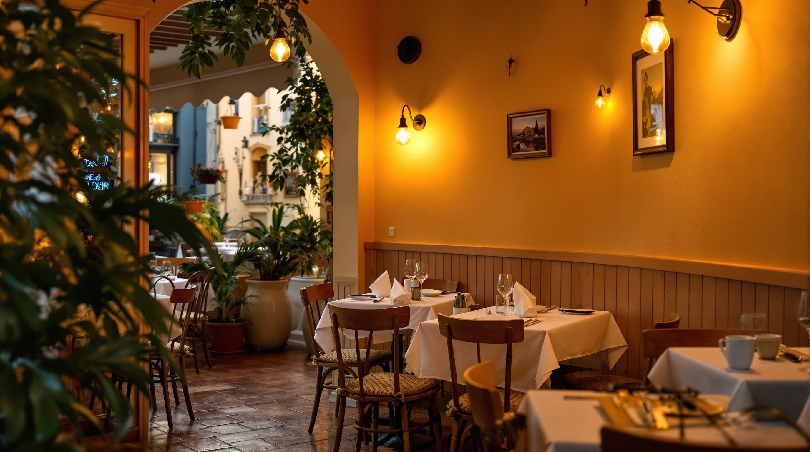
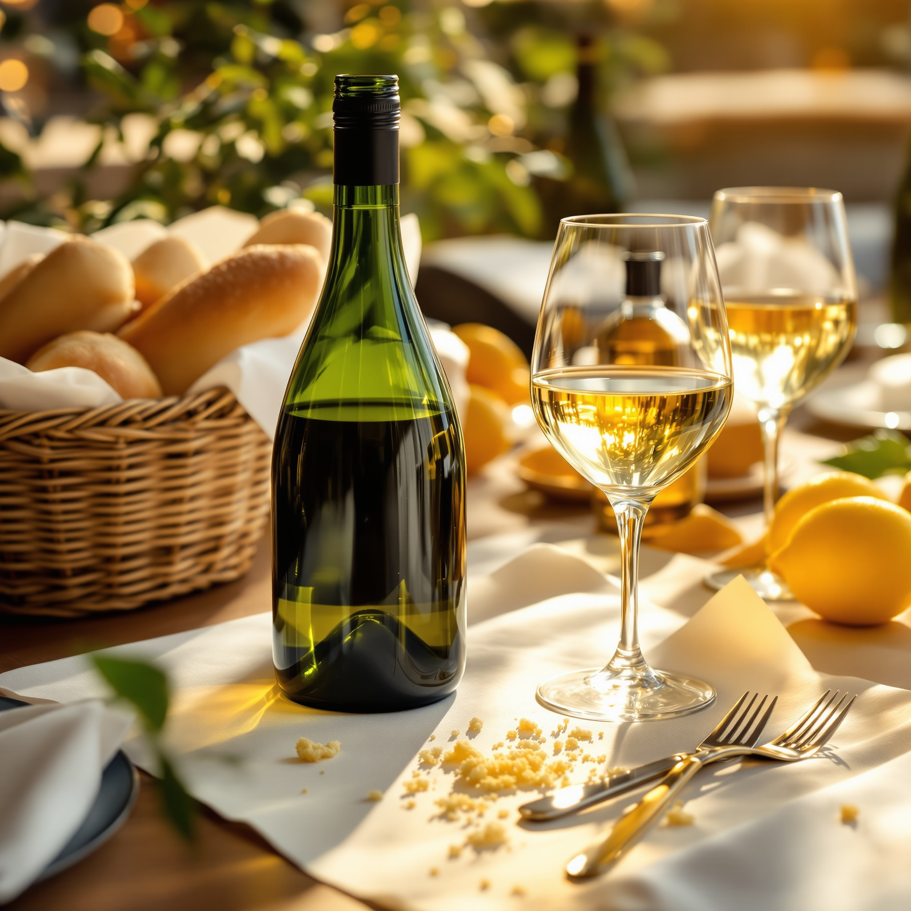

Spaghetti alle vongole
Aglio, prezzemolo e un filo di peperoncino. Vongole aperte al momento.
Ristorante di pesce · Milano, zona Washington
di Licia e Oreste
Il pescato del giorno, servito a tavola.
Due di noi in sala e in cucina, ogni sera.
4,4 su 289 recensioni · qui si torna
L’accoglienza
Non siamo una catena e non siamo una pescheria alla moda.
Siamo una famiglia. Licia vi accoglie in sala, Oreste sceglie il pesce e sta ai fornelli.
Cuciniamo come a casa nostra: pesce fresco, poche cose fatte bene, il tempo di una cena senza fretta.
Quando arrivate, vi troviamo il tavolo giusto. È così da sempre.


Il pesce del giorno


Il pesce lo prende Oreste, guardandolo negli occhi. Quello che non è fresco, non entra.
Per questo la carta cambia con il mercato: vi diciamo noi cosa c’è di buono oggi.
La carta
Il pesce si paga a seconda del pescato del giorno: chiedeteci il prezzo, ve lo diciamo prima di ordinare.

Aglio, prezzemolo e un filo di peperoncino. Vongole aperte al momento.

Gamberi, calamari e il pesce del giorno alla brace, con limone e olio buono.

Calamari, gamberi e pesciolini, panatura leggera e croccante. Da mangiare caldo.
Il piatto di casa
Cozze, vongole e gamberi in un sugo che sa di mare. È quello che vi accoglie in apertura.
Cambiamo la carta con il mercato. Per allergie o per un piatto per i più piccoli, ditecelo: troviamo il modo.


La sala
Pochi tavoli, carta bianca e lampade morbide. Si cena con calma, come si deve.
È il posto per una sera in due o per una tavolata in famiglia.
Perché si torna
4,4 su 5 da 289 persone che sono passate a cena. Non un colpo di fortuna: una media che resta alta negli anni.
Chi ci scrive parla del pesce fresco e dell’accoglienza in famiglia. È esattamente quello che proviamo a fare ogni sera.
Valutazione media dei clienti su Google.
Prenota un tavolo
Prenotate con una telefonata: rispondiamo noi e vi troviamo il posto giusto.
02 4771 0757Chiamate anche solo per chiedere cosa c’è di fresco stasera.
A cena
Orari indicativi: confermateli con noi al telefono quando prenotate.
Come raggiungerci
A due passi da De Angeli. Comodi il tram e la metro rossa.
Prima di venire
Chiamateci per prenotare: il pescato del giorno finisce, e i tavoli anche.
02 4771 0757